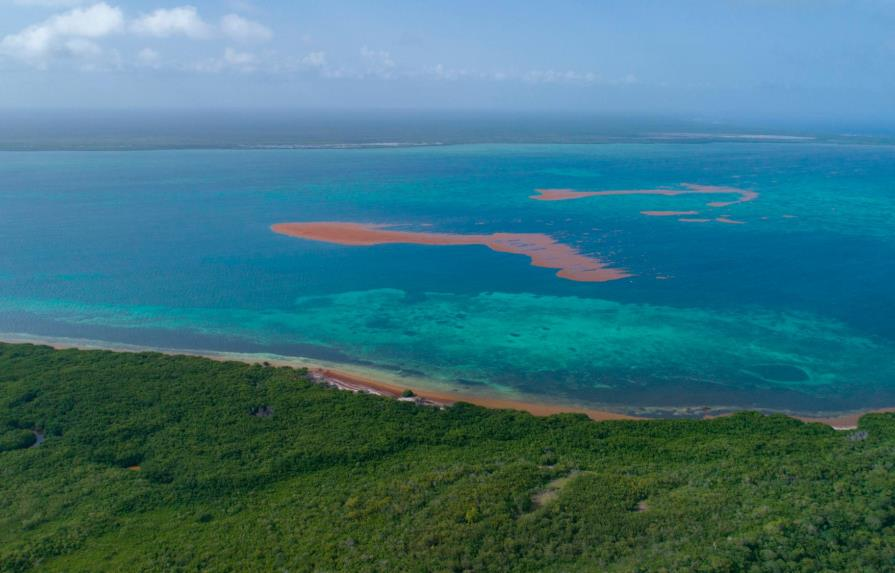

El Paqrque Nacional del Este, tambien conocido como Parque Nacional Cotubanama, es una de las reservas naturales mas importantes de la Republica Dominicana. Este parque ofrece una rica biodiversidad y paisajes impresionantes
A continuacion, se muestra una imagen del Parque Nacional del Este:
En el parque, puedes realizar diversas actividades como:
Este es un audio sobre la naturaleza de este lugar:
En el parque, puedes visitar los siguientes enlaces:
Este es un video sobre el Parque Nacional del Este: